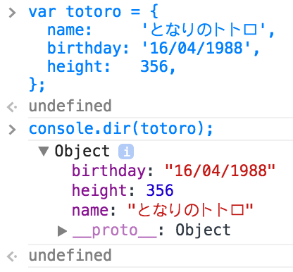
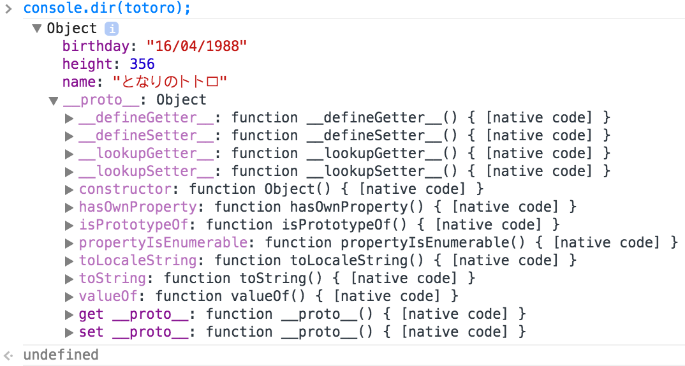
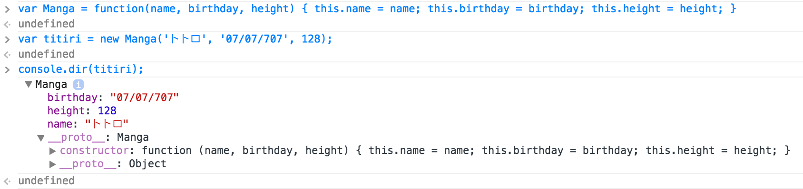
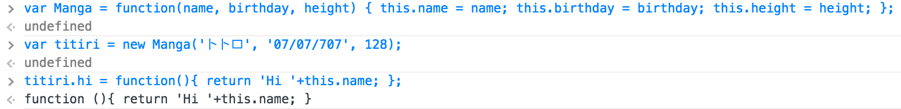

La création d'objets en JS peut s'effectuer de multiples façons. L'élément le plus surprenant, pour des développeurs habitués à des langages objets basés sur la définition de classe, est très sûrement la construction d'objets par prototypage. Dans ce type de langage, la définition des objets n'est pas obtenue par instanciation d'une description générique (la classe), mais est le résultat de la description directe des propriétés (attributs et méthodes) de l'objet. Nous allons explorer dans un premier temps les mécanismes les plus courants pour définir des objets en JS avant d'explorer quelques traitement classiques en programmation fonctionnelle.
Un objet en JavaScript est un ensemble de propriétés. Une propriété se présente sous la forme d'un couple (clé, valeur). Lorsque la valeur est une fonction, cela correspond à la définition d'une méthode de l'objet, lorsque cela n'est pas une fonction, cela correspond à la définition d'un attribut. Les propriétés d'un objet sont accessibles soit par la notation pointé (objet.propriété) soit via un sélecteur (objet['propriété']). Le sélecteur est pratique lorsque les propriétés contiennent des caractères particuliers comme l'espace.
Comme vu en cours, on peut exploiter trois approches principales pour la création d'objets en JavaScript: le singleton, le constructeur et l'usine à objets. Nous allons explorer ces trois approches afin de bien comprendre leurs différences et les situations dans lesquelles une approche est plus appropriée que les autres.
La première approche est utile lorsque vous n'avez pas besoin de manipuler plusieurs instances d'un objet. Dans ce cas, vous pouvez créer facilement un singleton en énumérant tout simplement les propriétés de votre objet. Dans l'exemple ci-dessous, on crée un objet possédant trois propriétés: un nom, une date et une taille.
var totoro = {
name: 'となりのトトロ',
birthday: '16/04/1988',
height: 356,
};
Copiez/collez la déclaration ci-dessus dans la console JavaScript de Chromium. Explorez maintenant ce nouvel objet à l'aide de console.dir(totoro). Vous devriez visualiser la définition de cet objet et obtenir ceci:
Comme vous le constatez, cet objet est de type Object et possède les trois propriétés définies lors de sa déclaration. Par contre, on observe une propriété au nom un peu surprenant __proto__, aussi de type Object. Explorez un peu cette propriété pour découvrir que c'est une référence au prototype de cet objet
Cet objet correspond à l'objet dont nous avons hérité par défaut, le type Object ! On ne va pas entrer trop dans les détails de cet objet pour l'instant. Retenons simplement que le type de notre instance totoro est Object et que cette information est défini dans l'attribut "caché" __proto__.
Un objet tel que totoro est ce que l'on appelle un singleton, c'est-à-dire une instance unique d'un type donné (ce que vous construisez avec un constructeur privé en Java). Cela peut servir, mais lorsque l'on souhaite créer plusieurs instances de même type, il est nécessaire de passer par un autre mécanisme de construction d'objet reposant sur la notion de constructeur. Pour cela, on définit dans un premier temps une fonction correspondant au constructeur de l'objet, puis dans un second temps, on utilise l'opérateur new afin d'instancier de nouveaux objets de ce type.
Tapez les commandes ci-dessous dans votre console afin de produire un résultat similaire:
Si vous observez attentivement la structure de cet objet, vous remarquerez qu'une chose intéressante s'est produite: cet objet n'est plus de type Object mais de type Manga ! Le fait d'instancier l'objet avec l'opérateur new et le constructeur Manga a induit sa création comme une instance du type Manga. Après tout, il est nécessaire en Java que le constructeur soit du même nom que la classe, on pourrait donc estimer que c'est le constructeur qui nomme la classe ;) Deuxième élément intéressant, vous remarquez qu'un attribut constructor est défini au niveau du protoype (__proto__) de notre objet titiri et que cet attribut référence la fonction Manga, c'est-à-dire notre constructeur. Dernier élément, moins surprenant cette fois, le type Manga hérite bien du type de base Object.
Nous allons maintenant modifier notre objet afin de lui ajouter une méthode. Définissez la méthode hi() qui retourne I'm トトロ en ajoutant une propriété à titiri.

Une dernière manière possible pour créer un objet consiste à passer par une
Reprenons notre type Manga et créons une instance via une
var Manga = function(name, birthday, height) {
this.name = name; this.birthday = birthday; this.height = height; };
var titiri = new Manga('トトロ', '07/07/707', 128);
Manga.prototype.hi = function(){ return 'Hi '+this.name; };
var titiri2 = Object.create(Manga.prototype);
titiri.hi();
titiri2.hi();
Exécutez les lignes de code données ci-dessus dans la console JavaScript. Comme l'illustre les résultats des appels à la fonction hi sur les deux objets, on vérifie bien que le constructeur n'ayant pas été invoqué lors de la création de titiri2, ses attributs n'ont ainsi pas été initialisés (et donc pas créés comme l'illustre la figure ci-dessous !). En effet, lorsque l'opérateur new est utilisé, un certain nombre d'opérations spécifiques sont effectuées:
En guise de conclusion, il faut être très attentif à ce que l'on fait lorsque l'on créé des objets en JavaScript car selon la méthode employée, on obtient des résultats assez différents !
Maintenant que nous connaissons différents procédés pour construire nos objets, nous allons étudier la création de lien d'héritage entre objets. En fait, en utilisant l'opérateur new, nous avons vu que le lien d'héritage est créé au moment de l'instanciation avec cet opérateur. Lorsqu'un attribut ou une méthode est invoquée sur un objet, elle est d'abord recherchée sur cet objet et si elle n'est pas trouvée, la recherche se poursuit au niveau de son prototype, et ce récursivement jusqu'à atteindre Object.
Explorons cela concrètement en définissant un type Animal que nous spécialiserons ensuite en type Dog.
var Animal = function () {
this.name = 'unknown';
this.getName = function () {
return this.name;
}
this.talk = function () {
return '...';
}
};
var Dog = function () {
var private = 42;
this.name = "Bello";
this.talk = function () {
return 'WOUF WOUF !';
}
};
// Dog spécialise Animal
Dog.prototype = new Animal();
var dog = new Dog();
console.log(
"Is dog an instance of Dog? ", dog instanceof Dog, "\n",
"Is dog an instance of Animal? ", dog instanceof Animal, "\n",
dog.talk() +"\n", // Should be: "WOUF WOUF !"
dog.getName() +"\n", // Should be: "Bello"
dog.private +"\n" // Should be: 'undefined'
);
Nous allons maintenant nous intéresser à la modélisation d'une partie de jeu d'échecs. Cela nous permettra de nous approprier les notions d'héritage sur un exemple concret et de découvrir au passage la possibilité de faire des IHM "jolies" à l'aide des canvas. Le but à atteindre est de calculer les déplacements de quelques pièces (toutes si vous êtes motivés !) du jeu d'échec.
Afin de réaliser les premières étapes du jeu d'échec, un peu de code vous est donné afin de vous concentrer sur la partie concernant les déplacements des pièces. En effet, toutes les pièces se déplacent, mais pas de la même manière. L'héritage et le polymorphisme sont donc pratiques afin de calculer les différents types de déplacements des différentes pièces du jeu.
Afin de ne pas perdre trop de temps sur les aspects graphiques, nous allons nous exercer sur quelques primitives graphiques disponibles au travers la balise canvas afin de pouvoir se concentrer sur l'héritage ensuite. La balise canvas permet de définir une zone graphique rectangulaire dans laquelle il est possible de récupérer un contexte graphique (un peu comme le paramètre Graphics de la méthode paintComponents des JPanel). A l'aide de ce contexte graphique, il est ensuite possible d'appliquer différentes opérations pour dessiner des figures (creuses ou remplies) ou afficher des images. Nous n'explorerons pas ici toutes les possibilités des canvas, juste celles nécessaires à la réalisation de l'interface graphique de notre jeu.
Pour ce premier exercice, nous aurons besoin des objets et méthodes suivantes:
Ces premières primitives vont nous permettre de créer le damier du plateau de jeu. Par contre, pour ce qui est des pièces, il est préférable de passer directement par des images :) L'exercice suivant a pour but de vous familiariser avec les primitives permettant d'afficher une image complète ou partielle dans un canvas.
Avant de pouvoir manipuler une image, encore faut-il la charger ... une fois cette dernière accessible, il devient possible grace à la méthode drawImage de recopier directement tout ou partie de l'image en la redimensionnant directement dans le canvas:
var chessSymbols = new Image();
chessSymbols.src = 'chess.png';
chessSymbols.onload = function() {
console.info("Chess symbols loaded !");
gfx.drawImage(chessSymbols, 0, 0, canvas.width, canvas.height);
};
La première étape de l'exercice suivant consiste à afficher d'abord l'ensemble de l'image chess.png et d'essayer d'en extraire ensuite le pion blanc. L'objectif est de reproduire l'affichage ci-dessous (sachant que le pien est positionné à la moitié du canvas (en largeur et en hauteur) et qu'une pièce rentre dans un carré d'environ 75 pixels).
Complétez le squelette donné ci-dessous afin de reproduire l'image présentée ci-dessus :)
Nous disposons maintenant de suffisamment d'éléments sur les aspects graphiques pour pouvoir produire une jolie interface pour notre jeu d'échec. Nous allons donc basculer sur l'élément important de conception qui va mettre en oeuvre la création de différents types liés par des relations d'héritage.
Le jeu d'échec comporte 6 types de pièces pouvant prendre chacune la couleur noire ou blanche: le roi (King), la reine (Queen), la tour (Rook), le fou (Bishop), le cavalier (Knight) et le pion (Pawn). Chacune de ces pièces possède un nom (name), une couleur (color), une position (line et column) sur l'échiquier et une représentation graphique (nous verrons cela plus tard !). Chacune de ces pièces doit être capable de s'afficher (draw) sur le plateau et de calculer ses déplacements valides (getMoves). Il peut être pratique aussi d'introduire une pièce "vide" pour les cases ne contenant pas de pièce du jeu.
La décomposition proposée consiste à créer:
Afin de vous permettre de démarrer plus rapidement, vous trouverez ci-dessous le squelette de la page chess.html contenant notamment la déclaration du type Piece et illustrant la définition de type via la méthode du constructeur. Soyez attentif aussi à la manière dont il est possible d'invoquer le constructeur d'un autre objet (cf. constructeur de Pawn).
<html>
<head>
<script type='text/javascript'>
// On tente de charger l'image au plus tôt !
var chessSymbols = new Image();
chessSymbols.src = 'chess.png';
chessSymbols.onload = function() {
console.info("Chess symbols loaded !");
// dessine la grille, une fois l'image chargée
//drawGrid(0,0, canvas.width, canvas.height, 8, 8);
};
</script>
</head>
<body>
<h1>Deep blue version JS</h1>
<center><canvas id='screen' width='400' height='400' >JavaScript est nécessaire ...</canvas></center>
<script type='text/javascript'>
var canvas = document.getElementById("screen");
var gfx = canvas.getContext("2d");
// définition du constructeur du type Piece
var Piece = function(name, color, line, column){
this.name = name || 'empty'; // si il n'y a pas de paramètre 'name', utiliser 'empty'
this.line = line || 0;
this.column = column || 0;
this.color = color || 'grey';
this.pieceId = undefined;
};
// définition d'une méthode du type Piece: il est crucial de la créer
// au niveau du prototype et non pas de l'objet !
// Cette fonction sera pratique pour calculer le déplacement des pièces
// quelle que soit leur orientation
Piece.prototype.orientation = function() {
return (this.color === 'white') ? +1 : -1;
}
// Constructeur du type Pawn, observez attentivement l'appel au constructeur de Piece !
// pieceId correspond aux coordonnées d'extraction des images du pion en blanc puis noir
var Pawn = function(color, line, column) {
Piece.prototype.constructor.call(this, 'Pawn', color, line, column);
this.pieceId = [[0, 5], [480, 5]];
}
Pawn.prototype = new Piece();
//var createBoard = function(nbLine, nbColumn) // avec des pieces vide
//var isEmpty = function(lig, col)
//var put = function(lig, col, piece)
//var board = createBoard(8, 8);
//var initBoard = function() // avec les pièces du jeu
var convertCoordinates = function(ligPixel, colPixel) {
var lig = Math.ceil(ligPixel / (canvas.height/8)) - 1;
var col = Math.ceil(colPixel / (canvas.width /8)) - 1;
return [lig, col];
}
var highlightedCells = [];
// var drawCell = function(coord, color)
//var highlight = function(on)
canvas.addEventListener("mousedown", mouseClicked, false);
//var mouseClicked = function(event) { // Pourquoi cela ne fonctionne pas avec var ?!
function mouseClicked(event) {
/* var ligCoord = event.pageY - canvas.offsetTop;
var colCoord = event.pageX - canvas.offsetLeft;
var coord = convertCoordinates(ligCoord, colCoord);
console.info(coord);
if (highlightedCells.length > 0) {
highlight(false);
highlightedCells = [];
}
var piece = board[coord[0]][coord[1]];
if (piece.name !== '.') {
var moves = piece.getMoves();
highlightedCells.push(moves);
highlight(true);
} else {
// TODO: if empty and highlighted, move the piece !
// doMove();
}*/
}
//initBoard();
//var drawGrid = function(x, y, width, height, nbLig, nbCol) {
</script>
</body>
</html>